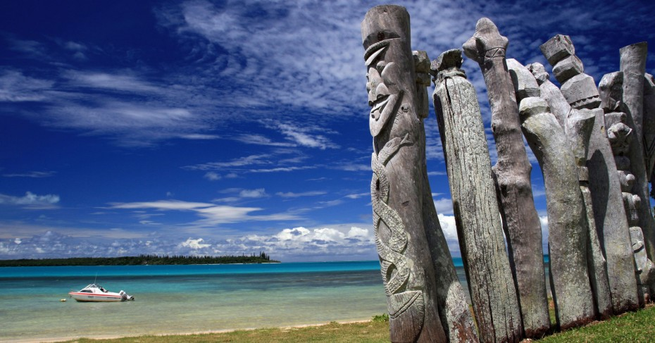
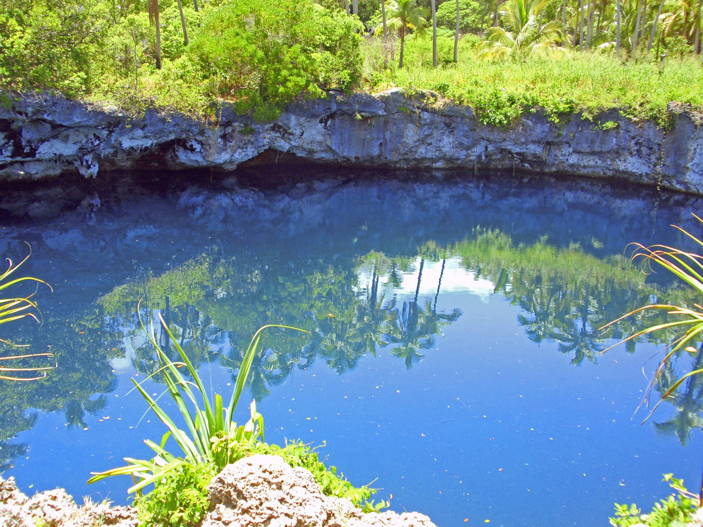
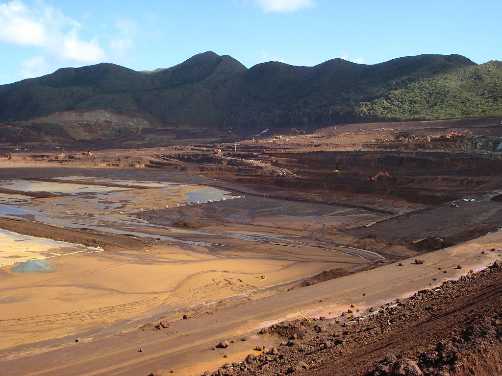
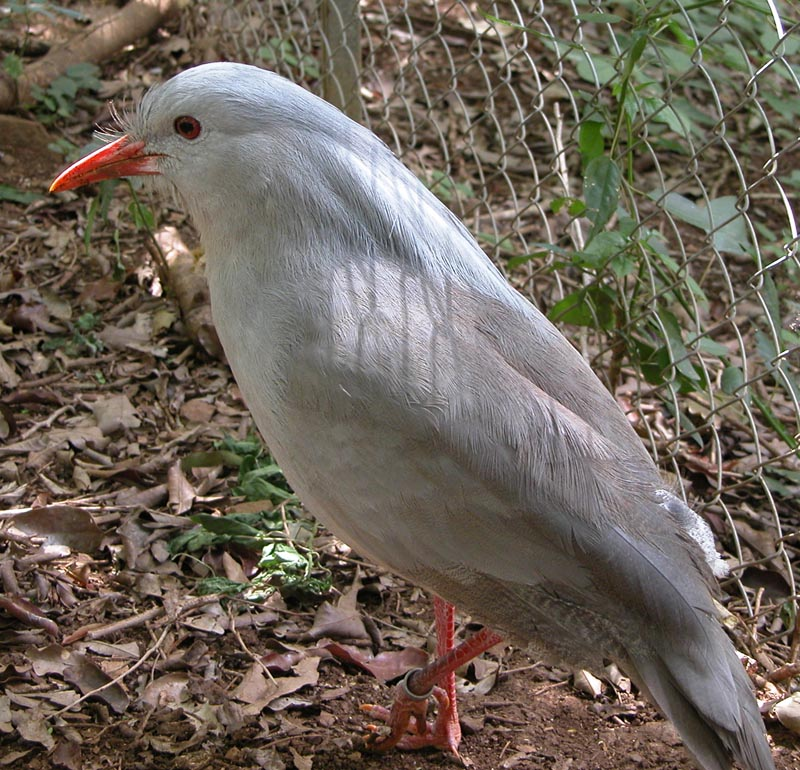

The earliest traces of human presence in New Caledonia date back to the Lapita period c. 1600 BCE to c. 500 BCE. The Lapita were highly skilled navigators and agriculturists with influence over a large area of the Pacific.
British explorer Captain James Cook was the first European to sight New Caledonia, on 4 September 1774, during his second voyage. He named it "New Caledonia", as the northeast of the island reminded him of Scotland.[9] The west coast of Grande Terre was approached by Jean-François de Galaup, comte de Lapérouse in 1788, shortly before his disappearance, and the Loyalty Islands were first visited between 1793 and 1796 when Mare, Lifou, Tiga, and Ouvea were mapped by William Raven. The American whaler encountered the island named then Britania, and today known as Mar (Loyalty Is.) in November 1793. From 1796 until 1840, only a few sporadic contacts with the archipelago were recorded. About fifty American whalers (identified by Robert Langsom from their log books) have been recorded in the region (Grande Terre, Loyalty Is., Walpole and Hunter) between 1793 and 1887. Contacts became more frequent after 1840, because of the interest in sandalwood.
As trade in sandalwood declined, it was replaced by a new form of trade, "blackbirding", a euphemism for tricking Melanesian or Western Pacific Islanders drawn from New Caledonia, the Loyalty Islands, New Hebrides, New Guinea, and the Solomon Islands to work in the sugar cane plantations in Fiji and Queensland. Blackbirding was practiced by both French and British-Australian traders, but in New Caledonia's case, the trade in the early decades of the twentieth century involved relocating children from the Loyalty islands to the Grand Terre for labour in plantation agriculture. New Caledonia's primary experience with black birding revolved around a trade from the New Hebrides (now Vanuatu) to the Grand Terre for labour in plantation agriculture, mines, as well as guards over convicts and in some public works. The historian Dorothy Shineberg's milestone study, The People Trade, discusses this 'migration'. In the early years of the trade, coercion was used to lure Melanesian islanders onto ships; in later years indenture systems were developed, however, when it came to the French trade in people, which took place between its Melanesian colonies of the New Hebrides and New Caledonia, very few regulations were implemented. This represented a departure from the British experience, since increased regulations were developed to mitigate the abuses of black birding and recruitment strategies on the coast lines.
The first missionaries from the London Missionary Society and the Marist Brothers arrived in the 1840s. In 1849, the crew of the American ship Cutter was killed and eaten by the Pouma clan. Cannibalism was widespread throughout New Caledonia.
(Troue Bleu d'Anawa) – Loyalty Islands, Ouvea. Impressive sinkhole, filled with water. Upper layer is freshwater, deeper comes sea water. Near the bottom the water is anoxic, with a foggy substance. The lake is more than 30 m deep.
Hienghène (the Brooding Hen) – North Province. Amazing limestone rock formation – island. These rocks from the different viewpoints remind Gothic cathedral or sphinx or a hen sitting on eggs.
New Caledonia is a major source for nickel and contains roughly 10% of the worlds known nickel supply. The islands contain about 7,100,000 tonnes of nickel. With the annual production of about 107,000 tonnes in 2009, New Caledonia was the world's fifth largest producer after Russia (266,000), Indonesia (189,000), Canada (181,000) and Australia (167,000).[3] In recent years, the economy has suffered because of depressed international demand for nickel, due to the ongoing global financial crisis. Only a negligible amount of the land is suitable for cultivation, and food accounts for about 20% of imports. In addition to nickel, the substantial financial support from France and tourism are keys to the health of the economy. In the 2000s, large additions were made to nickel mining capacity. The Goro Nickel Plant is expected to be one of the largest nickel producing plants on Earth. When full-scale production begins in 2013 this plant will produce an estimated 20% of the global nickel supply.[4] However, the need to respond to environmental concerns over the country's globally recognized ecological heritage, may increasingly need to be factored into capitalization of mining operations. The GDP of New Caledonia in 2007 was 8.8 billion US dollars at market exchange rates, the fourth-largest economy in Oceania after Australia, New Zealand, and Hawaii.[5] The GDP per capita was 36,376 US dollars in 2007 (at market exchange rates, not at PPP), lower than in Australia and Hawaii, but higher than in New Zealand.[5] In 2007, exports from New Caledonia amounted to 2.11 billion US dollars, 96.3% of which were mineral products and alloys (essentially nickel ore and ferronickel).[6] Imports amounted to 2.88 billion US dollars.[6] 26.6% of imports came from Metropolitan France, 16.1% from other European countries, 13.6% from Singapore (essentially fuel), 10.7% from Australia, 4.0% from New Zealand, 3.2% from the United States, 3.0% from China, 3.0% from Japan, and 22.7% from other countries.
Up to 2010, the only flag used to represent New Caledonia, an overseas territory of France, was the flag of France, a tricolor featuring three vertical bands coloured blue (hoist side), white, and red known to English speakers as the French Tricolour or simply the Tricolour. However, in July 2010 the Congress of New Caledonia voted in favour of a motion to fly the Kanak flag alongside the French tricolor.
The emblem of New Caledonia consists of a nautilus shell in the foreground; the 2 symbols behind are (from left to right) a Flèche faîtière, a kind of arrow which adorns the roofs of Kanak houses, thrust through tutut shells, and an Araucaria columnaris (an endemic tall pine).
The kagu or cagou (Rhynochetos jubatus) is a crested, long-legged, and bluish-grey bird endemic to the dense mountain forests of New Caledonia. It is the only surviving member of the genus Rhynochetos and the family Rhynochetidae, although a second species has been described from the fossil record. Measuring 55 cm (22 in) in length, it has pale grey plumage and bright red legs. Its 'nasal corns' are a unique feature not shared with any other bird. Almost flightless, it spends its time on or near the ground, where it hunts its invertebrate prey, and builds a nest of sticks on the forest floor. Both parents share incubation of a single egg, as well as rearing the chick. It has proven vulnerable to introduced predators, and is threatened with extinction.
Christian Karembeu
Soccer
Christian Karembeu is a retired French international footballer and the current Strategic Advisor of Olympiacos F.C.. He is also part of a Paris-based consortium to expand the A-League with a Pacific Island team.
Frédéric Piquionne
Soccer Midfielder
Frédéric Piquionne is a French footballer who plays as a forward for Portland Timbers. His former clubs are Golden Star of Martinique, Nîmes Olympique, Rennes, AS Saint-Etienne, AS Monaco, Lyon, Portsmouth, West Ham United and Doncaster Rovers. He plays for Martinique at the international level and represented them in the run up to the 2013 CONCACAF Gold Cup and he was named in the 2012 Caribbean Cup squad. He also played once for France in a friendly against Austria in 2007.
Antoine Kombouaré
Soccer
Antoine Kombouaré is a football manager and a former professional football defender.
Francis Carco
Novelist
Francis Carco was a French author, born at Nouméa, New Caledonia. He was a poet, belonging to the Fantaisiste school, a novelist, a dramatist, and art critic for L'Homme libre and Gil Blas. During World War I he became aviation pilot at Étampes, after studying at the aviation school there. His works are picturesque, painting as they do the street life of Montmartre, and being written often in the argot of Paris. He has been called the "romancier des apaches." His memoir, The Last Bohemia: From Montmartre to the Latin Quarter, contains reminiscences of Bohemian life in Paris during the early years of the twentieth century. He had an affair with Katherine Mansfield in 1915. Carco held the ninth seat at Académie Goncourt from 1937–1958. He is buried in Cimetière de Bagneux. He was the author of:
⁕Instincts
⁕Jésus-la-Caille
⁕Les Innocents
⁕Au coin des rues
⁕Les Malheurs de Fernande
⁕Les Mystères de la Morgue ou les Fiancés du IVº arrondissement. Roman gai
⁕L'Equipe
⁕La Poésie
⁕Maman Petitdoigt
⁕Francis Carco, raconté par lui-meme
Colin Higgins
Screenwriter
Colin Higgins was an Australian-American screenwriter, actor, director, and producer. He was best known for writing the screenplay for the 1971 film Harold and Maude. and for directing the films Foul Play and 9 to 5. He is not to be confused with a British actor of the same name who is known to Star Wars trivia buffs as "Fake Wedge" and who died in December 2012.
Dimitri Pelo
Rugby Player
Dimitri Pelo is a French professional rugby league player for Canberra Raiders in the NRL He has previously played for Montpellier Herault RC after switching codes in 2010 & for the Catalans Dragons club of Europe's Super League competition. His usual position is Wing, but he can also play at Fullback.
Georges Gope-Fenepej
Footballer
Georges Gope-Fenepej is a New Caledonian footballer who plays as a striker for Troyes AC and the New Caledonia national team. He is the brother of fellow footballer John Gope-Fenepej.
Robert Chef d’Hôtel
Olympic athlete
Robert C. Chef d’Hotel was a track and field athlete from France, who competed mainly in the men's 400 metres during his career. He was born in Nouméa, Sud, New Caledonia. He competed for France at the 1948 Summer Olympics held in London, Great Britain where he won the silver medal in the men's 4 x 400 metre relay with his team mates Jean Kerebel, Francis Schewetta and Jacques Lunis.